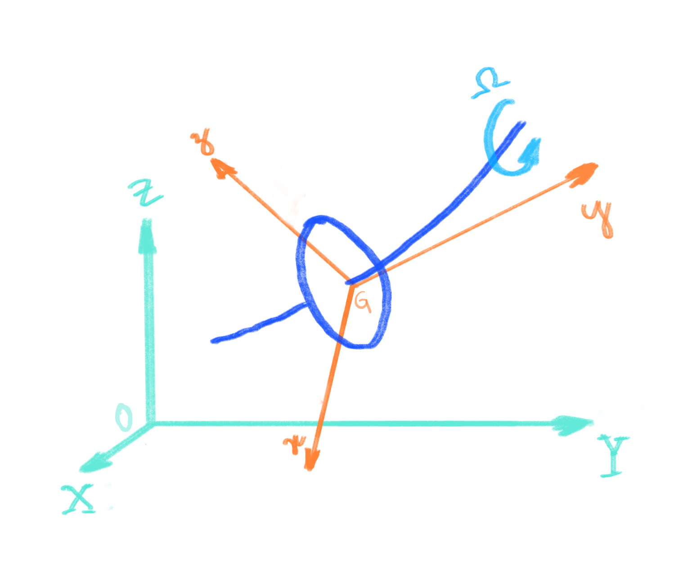

Sistema de Referência#
Buscando compreender os fenômenos relacionados com os movimentos descritos pelo conjunto rotativo, o sistema será representado matematicamente com o auxílio de dois sistemas de referência, um inercial \(R_0(X-Y-Z)\) e outro móvel \(R(x-y-z)\), conforme abaixo ilustrado.
{kind=link}
O objetivo da utilização de sistemas móveis de referência na cinemática é facilitar a representação de movimentos complexos, subdividindo-os em vários movimentos mais simples que se somam para compor o movimento absoluto. Toda a representação matemática é baseada em cursores considerando uma origem predefinida, conforme descrito a seguir.
Sistema inercial#
Composto pela origem \(O\) e cursores \(\mathbf{\hat{X}}\), \(\mathbf{\hat{Y}}\), \(\mathbf{\hat{Z}}\), na forma
Sua origem coincide com o centro geométrico dos mancais, e nesta base os vetores serão representados a partir dos cursores \(\mathbf{\hat{X}}\), \(\mathbf{\hat{Y}}\), \(\mathbf{\hat{Z}}\). Por exemplo, o vetor posição pode ser expresso como
As grandezas escalares \(X_0\), \(Y_0\), e \(Z_0\) indicam a amplitude deste vetor nas respectivas direções.
{kind=link}
Sitema móvel#
Composto pela origem \(G\) e cursores \(\mathbf{\hat{x}}\), \(\mathbf{\hat{y}}\), \(\mathbf{\hat{z}}\), na forma
Sua origem coincide com o centro de massa do disco, e nesta base os vetores serão representados a partir de seus cursores, por exemplo, o vetor posição pode ser expresso como
E, de forma análoga ao utilizado no sistema inercial, as grandezas escalares \(x\), \(y\) e \(z\) indicam a amplitude deste vetor nas respectivas direções.